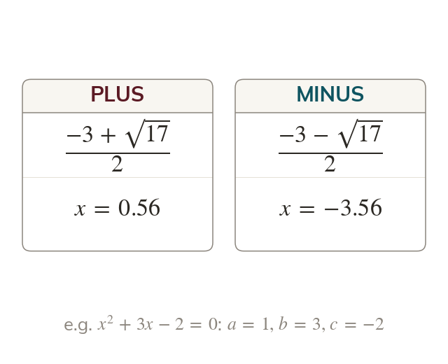
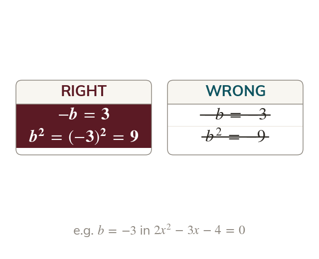
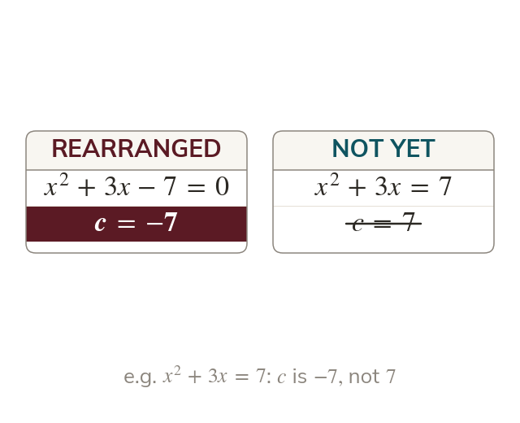
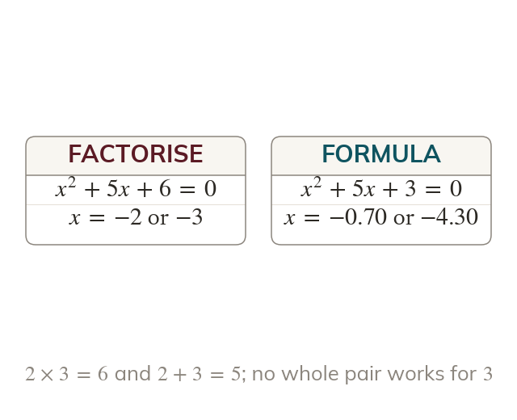
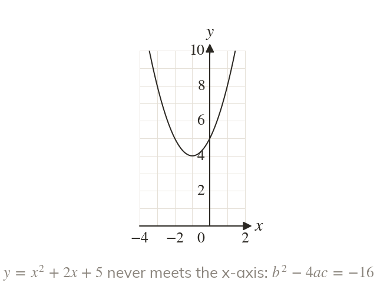

One formula for every quadratic
Every quadratic is solved by the formula. Its ± gives the two solutions.
Every equation can be solved with The plus and the minus give its two solutions.
Many quadratics never factorise neatly, yet every one can be solved. The formula, given on the exam sheet, works every time.
Work down the page at your own pace. Write every answer in your book first, then click to check it.
Read each card, then follow the worked examples one step at a time.

Every quadratic is solved by the formula. Its ± gives the two solutions.

The values a, and c keep their signs. A negative makes positive, and is never negative.
Pick an answer. If it's wrong, the feedback tells you which mistake it was.
Read each card, then follow the worked examples one step at a time.

The formula needs
So rearrange first, then read a, b and

A quadratic that factorises is quicker by factorising. 'To decimal places' signals that it does not.

When is negative, it has no square root. The equation has no real solutions.
Pick an answer. If it's wrong, the feedback tells you which mistake it was.
Finished? Next lesson: 10H.9.6 Quadratics in Context.
Log in, then search for a code to practise that skill.
Videos, worksheets and more on each part of this lesson.